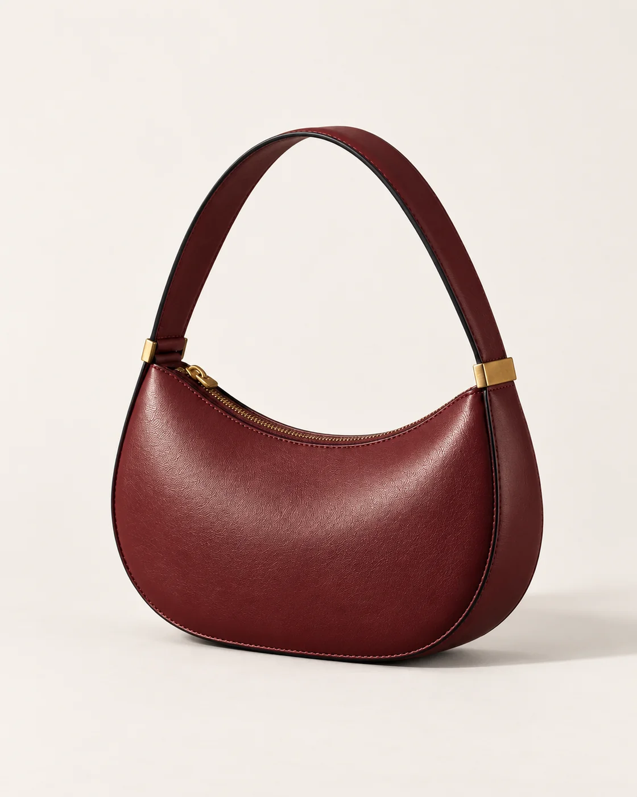
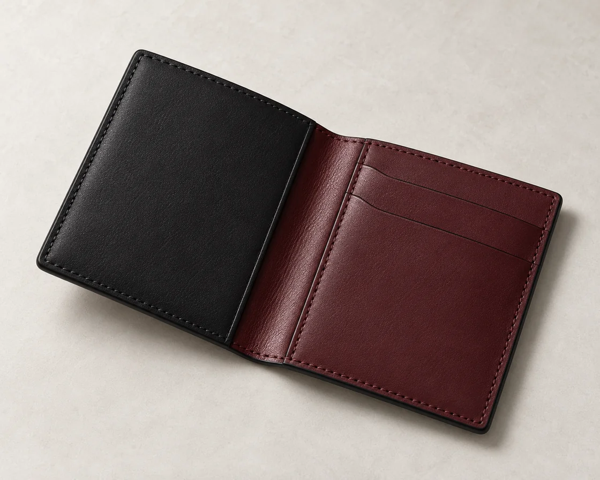

Two shapes. Two ways to carry. A focused first collection.

Full form / Oxblood
01 / Shoulder bag
The Arc
$280 USD
A crescent silhouette drawn in smooth leather. A generous strap, a curved zip, and just enough metal.
Illustrative price. Concept materials and dimensions.
Form & material
Smooth leather concept with tonal stitching, black painted edges and brushed brass-tone mounts. Zip closure. Approx. 26 × 19 × 7 cm; strap drop 24 cm. Dimensions are design targets, not measured specifications.
Care concept
For a real leather product, confirm care instructions with the maker. This concept proposes a soft dry cloth and storage away from prolonged sunlight; no material testing has been performed.
AI-generated product study. Fine hardware and stitching details may vary between views.
02 / Small leather good
The Fold
Less to carry. More room to move.
A compact cardholder with an oxblood interior and an Ink exterior. The quiet counterpart to the Arc.
$65 USD / Illustrative
Form & material
Folded smooth leather concept. Two card slots and a central pocket, with tonal stitching. Approx. 10 × 7 cm closed. Capacity and dimensions require physical validation.

The Fold / Ink, oxblood interior / AI-generated conceptMaterial study / AI-generated concept
The language of the object
Surface. Edge. Light.
The curve does the talking. The details hold the thought.
A visual exploration of leather, proportion and restraint. These objects are fictional; material descriptions illustrate the design intent.